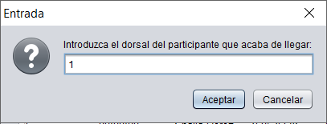

En esta ventana podra dar de alta, modificar o borrar una carrera, siempre y cuando no este finalizada.
Pulsando en cualquiera de los dos primeros botones accedera a una pantalla como esta.
Si pulsa en el boton Gestion Carrera,abajo derecha, podra iniciar el evento que rige la carrera que ha seleccionado.
Aqui podra seleccionar a los participantes de la carrera, eliminar uno si se ha confundido o eliminarlos a todos. Una vez llegado al maximo de participantes permitidos, boton Iniciar Carrera pasara a estar habilitado.
A continuacion, visualizara el cronometro que permitira registrar los tiempos de los corredores introduciendo su dorsal.

Para visualizar el cronometro, debera pulsar en iniciar, si la carrera finalizase por cualquier motivo ajeno a la organizacion, pulse finalizar, sino, cuando registre el tiempo del ultimo corredor, esta finalizara sola, registrando el tiempo total de la carrera.
Cuando un Participante llegue a la meta, pulse sobre el cronometro,
aparecera una ventana como esta, para registrar el dorsal del participante.
Una vez terminada la carrera, finalice el evento y exporte los datos de la carrera finalizada.
Tambien podra ver los resultados de las carreras finalizadas si pulsa el boton que se encuentra en la parte inferior derecha de la aplicacion.
Seleccione una carrera y pulse Resultado Carreras